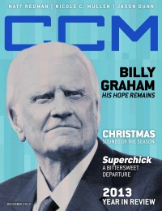

CCM Digital, Dec 2013
| Cover |
|---|
|  |
 Online Exclusively Online Exclusively |
| Writers in this Issue |
| Argyrakis, Andy Aspinwall, Grace S. Conner, Matt Evans, Russell Greer, Andrew Lucado, Max Lusk, Caroline Nardella, Jena Lee Wilson, Rachel |
Billy Graham
Cover Feature:- "How the Hope of One Becomes the Hope of All" by Caroline LuskBilly Graham, My Hope project
- "Recollect With Us" by Caroline Lusk
- "Generations Un-Divided: Nicole C. Mullen Bridges a Gap" by Andrew Greer
- CCM Digital, 2013 covers recapped
- "Sounds of the Season" by Caroline Lusk
- Paul Baloche - Christmas Worship by Caroline Lusk
- For King & Country - Into the Silent Night EP by Caroline Lusk
- Sidewalk Prophets - Merry Christmas to You by Caroline Lusk
- Brandon Heath - Christmas is Here by Caroline Lusk
- Dave Barnes - A December to Remember by Caroline Lusk
- Point of Grace - A Point of Grace Christmas by Caroline Lusk
- David Ian - A Vintage Christmas Wonderland by Caroline Lusk
- Andrew Greer - Angel Band: The Christmas Sessions by Caroline Lusk
- "Seek & You Shall Find" by Caroline Lusk
- "The Heart of His Children: the Road to Revelation" by Russell Evans
- Fuzed Worship by Rachel Wilson
- The Letter Black by Andy Argyrakis
- Dylan Arms by Matt Conner
- William McDowell by Andrew Greer
- A Thousand Champions by Matt Conner
- "For the Underdog" by Caroline Lusk
- "A Passion Sustained" by Jena Lee NardellaBlood: Water Mission
- Flame by Matt Conner
- "Jonny Diaz & Lauren Diagle" by Andrew Greer
- Martin Smith - God's Great Dance Floor, Step 02 by Matt Conner
- Jimmy Needham - The Hymn Sessions, Vol. 1 by Grace S. Aspinwall
- Matt Papa - Look & Live by Matt Conner
- Clay Crosse - reDedication by Andy Argyrakis
- Nicole C. Mullen - Crown Him: Hymns Old and New by Andrew Greer
- various artists - Grace Unplugged by Grace S. Aspinwall
- Aaron Sprinkle - Water and Guns by Andy Argyrakis
- Living Sacrifice - Ghost Thief by Matt Conner
- The Neverclaim - The Neverclaim by Matt Conner
- Andy Gullahorn - Beyond the Frame by Matt Conner
- Hardie Avenue - Party at the End of the World by Andy Argyrakis
- Keith Getty - Live at the Gospel Coalition by Andrew Greer
- William McDowell - Withholding Nothing by Andrew Greer
- various artists - BMI Trailblazers of Gospel Music Live 2013 by Andrew Greer
- Christian Life Church - CLC Live: Servants of Praise by Andrew Greer
- Randy Travis - Influence Vol. 1: The Man I Am by Andy Argyrakis
- Scott Stapp - Proof of Life by Matt Conner
- Gordon Mote - All Things New by Andy Argyrakis
- Brandon Heath - Christmas is Here by Grace S. Aspinwall
- John Schlitt - The Christmas Project by Andy Argyrakis
- Paul Baloche - Christmas Worship by Grace S. Aspinwall
- Sidewalk Prophets - Merry Christmas to You by Grace S. Aspinwall
- For King & Country - Into the Silent Night EP by Matt Conner
- Andrew Greer - Angel Band: The Christmas Sessions by Andy Argyrakis
- Dave Barnes - A December to Remember by Grace S. Aspinwall
- various artists - Heaven & Nature Swing by Andrew Greer
- "Burning Lights Tour, Willow Creek Community Church, South Barrington, IL" by Andy Argyrakis
- "On This Holy Night: An Excerpt" by Max Lucado
© 2011 CMnexus. Last updated September 2019. Contact: editor -AT- cmnexus -DØT- org About